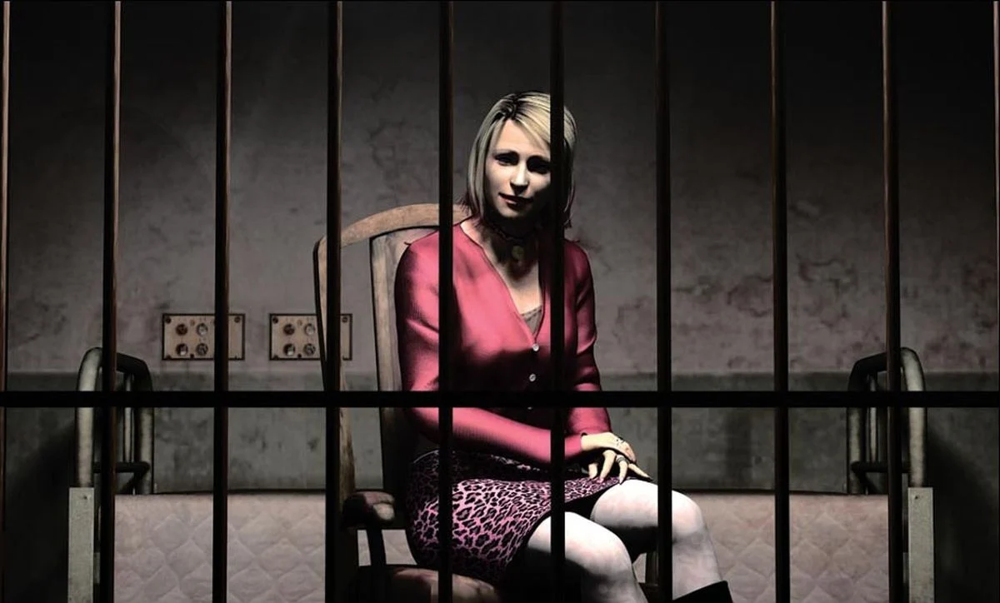

Silent Hill 2 (2001)

Game Details
- Release year: 2001
- Genre: Survival horror, Psychological horror
- Platforms : Playstation 2, Xbox, Windows
- Developer : Konami
The fragility of the Human Mind
The game begins with the protagonist, James Sunderland, looking at himself in a mirror while reading a letter received from his wife, who died three years earlier. The letter encourages him to travel to the town of Silent Hill in search of her.
Hoping to see his deceased wife again, James embarks on a journey where he meets strange and unusual characters, each of whom seems to carry some form of guilt. He also encounters Maria, a woman who looks exactly like his late wife, but who dresses and behaves in a much more provocative way.
During his journey, James explores a deserted town that somehow feels both empty and alive at the same time. Covered in fog and filled with an unsettling atmosphere, Silent Hill feels like a liminal space, a place where reality itself becomes uncertain. The player is constantly confronted with the fear of the unknown, the feeling that someone—or something—may be watching every action.
Through mysterious letters, blood-written messages on walls, and encounters with disturbing creatures that seem connected to his fears and repressed emotions, James is guided deeper and deeper into a journey that is not really through a city, but through his own psyche.
Throughout the story, he is forced to confront a guilt too great for him to accept, a guilt that ultimately leads him toward a painful truth.
All of this is accompanied by the music of Akira Yamaoka, whose industrial and metallic compositions create a constant feeling of anxiety (listen to:
Silent Heaven
) while emphasizing the emotions and actions of every character involved in the story (listen to:
True
).
Silent Hill 2 is not just a horror game; it is a powerful exploration of guilt, trauma, and the fragility of the human mind.